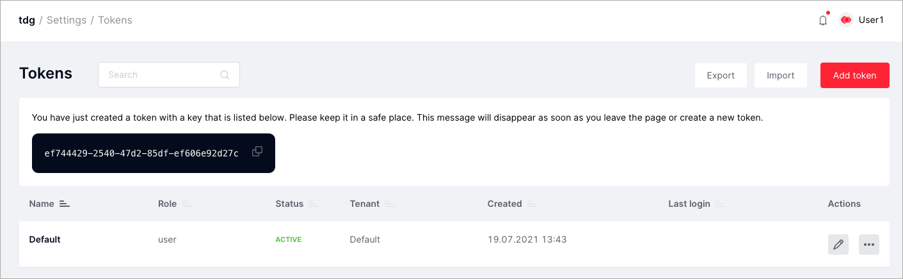

Adding tokens¶
Tokens help external system applications to get authorized access to TDG data and functions. In the web interface, the administrator generates a token, assigns it access rights to TDG objects, and passes the token to the developers of the external system.
You can generate a token in the Settings > Tokens tab:
- Click Add token:
- In the Create token dialog, submit the following parameters:
Name: the name (key) of the token, which will further identify it in the system.Expires in: token expiration date. This parameter is optional.Role: token role. Similar to the user’s role according to the role model of access.Tenant: leave the Default parameter unless you have several tenants. In that case, choose the name of the tenant.
- Click Submit to generate a token.
The token will be explicitly available only in the message in the web interface:
For security reasons, the token is only shown explicitly once when it is generated. The token message will disappear as soon as you leave this page or generate a new token.
After you’ve created a token, you cannot edit its name and tenant, only its role and the validity period.
You can block, delete, export, and import tokens similarly to user profiles.